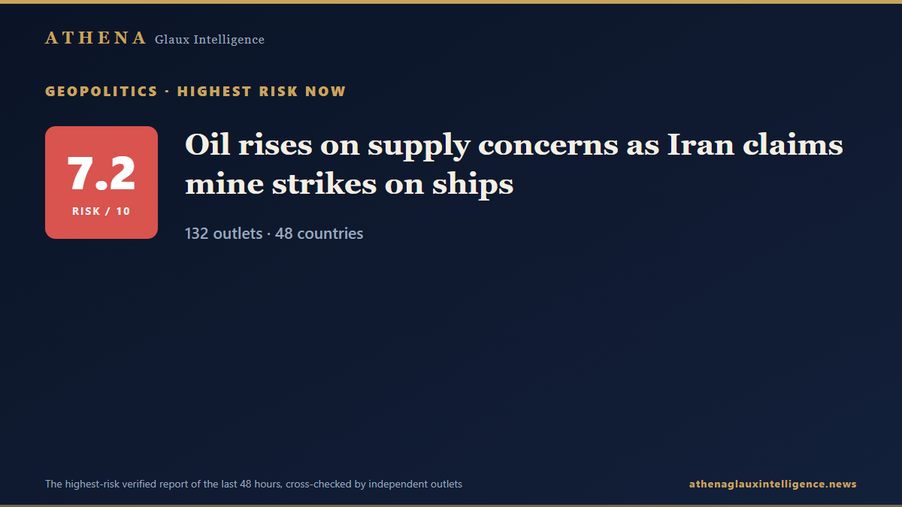

Κίνδυνος 7.2Αυξημένος
Γεωπολιτική, οικονομία και θαλάσσια ναυτιλία — διασταυρωμένα σε πολλές χώρες.
Γεωπολιτική
Όλη η Γεωπολιτική >Υψηλότερος κίνδυνος τώρα

Αυξανόμενος κίνδυνοςΑύξηση τις τελευταίες 24 ώρες
- Trump and NATO chief urge Russia to avoid actions that widen Ukraine warΚίνδυνος 0.0 → 6.4
- Melania Trump helps reunite 9 children with families amid Ukraine warΚίνδυνος 2.5 → 6.3
- UN Warns of Growing Risk of Atrocities by Israel Against PalestiniansΚίνδυνος 0.7 → 5.2
Ναυτιλία & ναυσιπλοϊα
Γραφείο Ναυτιλίας >Υψηλότερος κίνδυνος τώρα
Κίνδυνος 7.6Αυξημένος
Bulgaria rescues 35 migrants from rubber boat in Black Sea
Δείτε τα στοιχεία ›Πίνακας παρακολούθησηςΠεράσματα, λιμάνια και άλλες ναυτιλιακές αναφορές
- Strait of HormuzΔιαταραχήattack / strike · risk 7.2 · 133 newsrooms (72 h)
- Bab el-Mandeb / Red SeaΔιαταραχήattack / strike · risk 7.6 · 131 newsrooms (72 h)
- Kerch Strait / Black SeaΔιαταραχήattack / strike · risk 7.6 · 131 newsrooms (72 h)
Κάθε είδηση, ελεγμένη σε πολλές χώρες.
Το ATHENA Glaux παρακολουθεί 744 ειδησεογραφικά μέσα σε όλο τον κόσμο. Μια είδηση γίνεται επαληθευμένο γεγονός μόνο όταν την αναφέρουν ανεξάρτητα μέσα. Κάθε γεγονός δείχνει ποιος το ανέφερε πρώτος και έναν βαθμό κινδύνου με τους λόγους του.
1.364γεγονότα σε 24 ώρες
744μέσα που παρακολουθούμε
45λεπτά ανάμεσα στις ενημερώσεις
Σεισμός ή πλημμύρα κοντά σας αυτή την εβδομάδα;
Γράψτε την πόλη σας και δείτε σεισμούς, πλημμύρες, καταιγίδες και επίσημες προειδοποιήσεις κοντά της, με λίστα κιτ έκτακτης ανάγκης 72 ωρών. Δωρεάν, χωρίς εγγραφή, και η περιοχή σας μένει στη συσκευή σας.
Αναφορές έρχονται από ανεξάρτητα μέσα — όταν δύο συναντηθούν στην ίδια ιστορία, γίνεται επιβεβαιωμένο γεγονός.
Πώς ελέγχει το ATHENA μια είδηση
- ΣυλλογήΟι αναφορές φτάνουν από ανεξάρτητα μέσα σε πολλές χώρες.
- ΑντιστοίχισηΌταν δύο μέσα συναντιούνται στην ίδια είδηση, γίνεται επαληθευμένο γεγονός.
- ΕξήγησηΚάθε γεγονός δείχνει ποιος ήταν πρώτος, πόσο εξαπλώθηκε και γιατί ο κίνδυνος είναι αυτός.
Παγκόσμια προοπτική κινδύνου
Εβδομαδιαίες και μηνιαίες επισκοπήσεις: τα γεγονότα υψηλότερου κινδύνου, οι τάσεις ανά τομέα και περιοχή και τι να παρακολουθήσετε.
Διαβάστε την προοπτική ›Ημερήσια ενημέρωση
Τα δέκα σημαντικότερα γεγονότα της ημέρας στον κόσμο, οι αυξανόμενοι κίνδυνοι και τα νέα γεγονότα, με κάθε αριθμό εξηγημένο.
Ανοίξτε τη σημερινή ενημέρωση › Γεωπολιτική
ΓεωπολιτικήReduction in tuition fees for EU students ‘won’t be on the table’, says Burnham
The Prime Minister secured agreements on food and agriculture exports, emissions trading and a youth experience scheme at last week’s Brussels summit. από Evening Standard (London)
6.4Σημασία
4.1Κίνδυνος · αυξημένος
87%Βεβαιότητα
Οι τίτλοι των ειδήσεων παρουσιάζονται στα αγγλικά, όπως δημοσιεύτηκαν.
Τεχνολογία & Κυβερνοασφάλεια
US officials divided over Chinese spying allegations following Jensen Huang's return
Days after President Donald Trump declared Nvidia CEO Jensen Huang was not a security threat to the United States, a central question remains unanswered: was the woman Huang was having an affair… από Business Recorder
Επιχειρήσεις
Huawei found guilty in trade secrets theft case
A federal jury in the Eastern District of New York returned guilty verdicts following a three-month trial against Huawei Technologies Co., Ltd. από US Department of Justice news
Χορηγούμενο
Cybernetics and Artificial Intelligence Lab Welcome to the Cybernetics and Artificial Intelligence Laboratory, established at the Department of Business Administration of the National and Kapodistrian University of Athens. The lab is headed by Professor Dimitrios Thomakos. The lab aims to do research that can be published in top venues. Our research uses tools and methods of Artificial Intelligence, and lies in the following areas: - Forecasting - Decision making - Cyber security - Finance We are always looking forward to collaborating with exceptional students!
Μάθετε περισσότερα – Cybernetics and Artificial Intelligence LabΠλοία στα θαλάσσια περάσματα τώρα
Ζωντανές μετρήσεις AIS. Πατήστε ή περάστε πάνω από μια μπάρα για λεπτομέρειες.
Τελευταίες αναφορές
Huge blast hits Bangkok oil depot, 7 injured
FedEx plane skids off runway at Miami airport, causing delays
North Korea's Kim urges wider tactical nuclear weapons deployment on facility tour, KCNA says
Judge blocks FCC from early renewal of ABC licenses
S&P warns Nvidia’s board may be compromised, puts chipmaker’s rating on downgrade watch
Palestinian journalist killed by Israel in Gaza wins prestigious Rory Peck award
Russia Hits Kyiv Shopping Mall With Ballistic Missiles, Injures 7
Latest Israeli attack in Gaza City reportedly kills three
Γεωπολιτική
Colombia rescues all hostages held at Cartagena supermarket
Colombian security forces rescued all remaining hostages unharmed after a failed robbery led to an overnight siege at a Cartagena supermarket. από UPI World News
Εμπόριο & Βιομηχανία
US proposes new tariffs on 14 trading partners, including China and the EU
The US proposed new tariffs on 14 trading partners on Wednesday. από The Next Web
Γεωπολιτική
Ukraine Says Drone Strike That Sank Russian Corvette Merkury In Libya Was Self-Defence
Ukraine says Russian warships and arms-carrying cargo ships are valid targets anywhere, after its naval drones sank a Russian corvette in Libya's Benghazi port. από Marine Insight
Γεωπολιτική, Πολιτική & Ασφάλεια
Περισσότερα ›Πόλεμοι & συγκρούσεις
Israeli strike kills Hamas official, his wife and children
By Nidal al-Mughrabi CAIRO, Nov 25 (Reuters) - Israel's military killed a senior Hamas security official as well as his wife and two children with an airstrike on their Gaza Strip apartment early on… από Al-Monitor
- Διπλωματία & σύνοδοι
Trump says trade deal reached between the U.S. and the Philippines
- Αμυντική βιομηχανία & εξοπλισμοί
Pentagon Has Yet to Sign Off on 48 Patriot Missiles for Ukraine, Zelensky Says
- Διπλωματία & σύνοδοι
(2nd LD) N. Korea's Kim inspects nuclear material sites, calls for broader use of tactical nukes
- Εκλογές & πολιτική
Israel govt formation: Eisenkot, Lieberman join hands in bid to oust Netanyahu
Οικονομία, Χρηματοοικονομικά & Αγορές
Περισσότερα ›Πληθωρισμός & επιτόκια
Rupee records gain against US dollar
The Pakistani rupee strengthened against the US dollar in the inter-bank market on Wednesday. από Business Recorder
- Χρέος & προϋπολογισμοί
PM Describes European Commission's Opinion on Bulgaria's Excessive Deficit Response as "Stinging Rebuke"
- Τράπεζες & πίστη
Dubai Islamic Bank to buy Emirates Islamic in all-share deal
- Μετοχές, ομόλογα & αγορές
Tata Trusts To Go To Court Against N Chandrasekaran's Reappointment
- Πληθωρισμός & επιτόκια
Japanese Yen strengths as inflation data reaffirms BoJ rate hike bets
Εμπόριο, Βιομηχανία & Υποδομές
Περισσότερα ›Δασμοί & έλεγχοι εξαγωγών
US announces new tariffs on host of countries including China
The US has announced a fresh raft of tariffs as President Donald Trump pushes ahead with his signature trade policy. από MyJoyOnline
- Δασμοί & έλεγχοι εξαγωγών
US proposes excess capacity tariffs on Korean goods within agreed 15% ceiling
- Δασμοί & έλεγχοι εξαγωγών
US Proposes 25% Tariff On India. It Could Come Down With Trade Deal
- Κατασκευές & υποδομές
Malaysia benefits immensely as a trading nation by engaging with world leaders, says Anwar
- Αερομεταφορές, σιδηρόδρομος & οδικές
Brussels, we have a Starlink problem
Ενέργεια, Πόροι & Περιβάλλον
Περισσότερα ›- Ρύπανση & βιοποικιλότητα
Army calls detonation of bomb chemicals in Iowa a success after earlier fears of a toxic plume
- Ακραία καιρικά & φυσικές καταστροφές
Nepal Moves To Declare August Flood Missing Persons Dead
- Ρύπανση & βιοποικιλότητα
Blast heard, smoke seen rising over farmland near Iowa Army lead azide detonation site
- Ακραία καιρικά & φυσικές καταστροφές
Storm hits New York: Macy’s 100th Thanksgiving parade postponed for first time
Τεχνολογία, ΤΝ & Κυβερνοασφάλεια
Περισσότερα ›Επεξεργαστές & υπολογιστική
Nvidia halts chip shipments to Southeast Asia, FT reports
Some suppliers of Nvidia servers are reportedly suspending shipments to Southeast Asia. από DigiTimes Asia
- Επεξεργαστές & υπολογιστική
Delayed Motherhood Pushing Men To Import Brides From Thailand, Says Lululemon Founder. Walkouts Follow
- Διάστημα & δορυφόροι
Nasa's asteroid crash test left stadium-sized crater; first images reveal
- Διάστημα & δορυφόροι
Musk pledges two SpaceX shares for every American child
- Διάστημα & δορυφόροι
Pakistan makes history as its first astronaut reaches space
Επιχειρήσεις, Εταιρείες & Επενδύσεις
Περισσότερα ›Συγχωνεύσεις & εξαγορές
U.S.-led consortium agrees to acquire Lukoil's international portfolio in share-swap deal
An Eldridge-led consortium that includes the U.S. από World Oil
- Πτωχεύσεις & αναδιαρθρώσεις
Poundland collapses into administration putting 11,000 jobs at risk before Christmas
- Επενδύσεις
PepsiCo India to invest ₹868 cr in new foods manufacturing facility in Tamil Nadu
- Διοικήσεις & στελέχη
Taoiseach and Tánaiste both call on HSE board to give clarity on Anne O'Connor's sacking
- Συγχωνεύσεις & εξαγορές
Christchurch head curator hoping for ‘balanced contest’ in India vs New Zealand 2nd Test
Δυστυχήματα & έκτακτες ανάγκες
Περισσότερα ›Δυστυχήματα & έκτακτες ανάγκες
31 killed and 21 injured in blaze after vehicle overturns in Egypt, health ministry says
A vehicle carrying petroleum products overturned and caught fire on a major ring road in Cairo. από The Straits Times
- Δυστυχήματα & έκτακτες ανάγκες
Flinders Island sergeant shot on duty 'still has long way to go', family says
- Δυστυχήματα & έκτακτες ανάγκες
At least 31 dead after fuel tanker fire in Egypt
- Δυστυχήματα & έκτακτες ανάγκες
Plane crash off the coast of Mississippi kills 6, including 2 children
- Δυστυχήματα & έκτακτες ανάγκες
Türkiye mourns 5 soldiers killed in military helicopter crash
Τρεις τρόποι να διαβάσετε σήμερα
Ξεκινήστε από αυτόν που ταιριάζει στον χρόνο σαςΕπαληθευμένα γεγονότα
Κατά σειρά έκτασης της κάλυψης
- Vance says Jensen Huang won't need a pardon as scrutiny of Nvidia scandal builds in Washington188 μέσα · 56 χώρεςΚίνδυνος 4.4
- Oil tanker catches fire after hitting naval mine in Strait of Hormuz: Iranian Navy88 μέσα · 34 χώρεςΚίνδυνος 4.8
- Houthis target Saudi Arabia’s Red Sea ports as strikes escalate61 μέσα · 28 χώρεςΚίνδυνος 4.1
- Russian Strike Kills 2 in Kharkiv as Moscow Pounds Ukraine with Ballistic Missiles, 100+ Drones38 μέσα · 27 χώρεςΚίνδυνος 7.0
- Houthi projectile hits Saudi Arabia’s Jazan port, coalition says40 μέσα · 21 χώρεςΚίνδυνος 7.2
Γραφείο Αξιολόγησης
Κάντε μια ερώτηση και διαβάστε τεκμηριωμένη αξιολόγηση μιας βασικής είδησης, μαζί με το τι θα την διέψευδε.
Ανοίξτε το Γραφείο Αξιολόγησης ›Η σημερινή εικόνα
| 12:00 | 1125 |
|---|---|
| 13:00 | 578 |
| 14:00 | 1149 |
| 15:00 | 633 |
| 16:00 | 668 |
| 17:00 | 567 |
| 18:00 | 508 |
| 19:00 | 596 |
| 20:00 | 167 |
| 21:00 | 352 |
| 22:00 | 360 |
| 23:00 | 281 |
| 00:00 | 413 |
| 01:00 | 337 |
| 02:00 | 294 |
| 03:00 | 379 |
| 04:00 | 292 |
| 05:00 | 435 |
| 06:00 | 610 |
| 07:00 | 293 |
| 08:00 | 501 |
| 09:00 | 496 |
| 10:00 | 391 |
| 11:00 | 455 |
Κίνδυνος των σημερινών γεγονότων
Γεωπολιτική74Τεχνολογία & Κυβερνοασφάλεια38Οικονομία & Αγορές36Εμπόριο & Βιομηχανία35Επιχειρήσεις28Ενέργεια & Περιβάλλον18Ναυτιλία5
Αναδυόμενα σήματα
- Απότομη αύξηση · Ενεργό τώραCairo
- Απότομη αύξηση · Ενεργό τώραWest Java
- Απότομη αύξηση · Ενεργό τώραRas Tanura
- Απότομη αύξηση · Ενεργό τώραPoundland
- Απότομη αύξηση · Ενεργό τώραTariffs, export controls and trade restrictions
Επίσημες προειδοποιήσεις
- M 6.5 - Vanuatu regionM6.5 · USGS ·
- M 5.9 - 238 km SW of Yanglong, ChinaM5.9 · PAGER yellow · USGS ·
Μείνετε ενημερωμένοι
ATHENA Weekly Risk Picture
Οι μεγαλύτεροι γεωπολιτικοί, οικονομικοί και ναυτιλιακοί κίνδυνοι της εβδομάδας, διασταυρωμένοι και βαθμολογημένοι.
Κάθε Παρασκευή στις 08:00 ώρα Ελλάδας · δωρεάν · στα αγγλικά
Δωρεάν εγγραφήΤο ATHENA στο Telegram
Οι ειδήσεις τη στιγμή που δημοσιεύονται: έκτακτα γεγονότα με κίνδυνο 6 ή περισσότερο, ωριαία σύνοψη, ενημερώσεις κινδύνου και η ημερήσια ενημέρωση στις 10:00.
Δωρεάν · αναρτήσεις στα αγγλικά · αποχωρείτε όποτε θέλετε
Είσοδος στο κανάλιΤην εγγραφή τη διαχειρίζεται η beehiiv με διπλή επιβεβαίωση: τίποτα από όσα πληκτρολογείτε δεν αποστέλλεται στο ATHENA, και κάθε τεύχος έχει σύνδεσμο διαγραφής.
Παρακολούθηση κινδύνων
Περισσότερα ›Στενά του ΟρμούζΚίνδυνος 4.78 νέα αυτή την εβδομάδα · μείωση από 22 την προηγούμενη εβδομάδαΕρυθρά ΘάλασσαΚίνδυνος 7.216 νέα αυτή την εβδομάδα · μείωση από 46 την προηγούμενη εβδομάδαΕλληνοτουρκικάΚίνδυνος 3.77 νέα αυτή την εβδομάδα · αύξηση από 5 την προηγούμενη εβδομάδαΚύπροςΚίνδυνος 3.813 νέα αυτή την εβδομάδα · μείωση από 16 την προηγούμενη εβδομάδαΚυρώσεις κατά της ΡωσίαςΚίνδυνος 6.817 νέα αυτή την εβδομάδα · περίπου όσα και την προηγούμενη εβδομάδαΠόλεμος στην ΟυκρανίαΚίνδυνος 7.5222 νέα αυτή την εβδομάδα · μείωση από 272 την προηγούμενη εβδομάδαΜέση Ανατολή: Ισραήλ – ΓάζαΚίνδυνος 6.878 νέα αυτή την εβδομάδα · μείωση από 93 την προηγούμενη εβδομάδαΤαϊβάνΚίνδυνος 2.711 νέα αυτή την εβδομάδα · περίπου όσα και την προηγούμενη εβδομάδαΠετρέλαιο και φυσικό αέριοΚίνδυνος 6.927 νέα αυτή την εβδομάδα · μείωση από 35 την προηγούμενη εβδομάδαΔιώρυγα του ΣουέζΚίνδυνος 0.00 νέα αυτή την εβδομάδα · μείωση από 3 την προηγούμενη εβδομάδαΣτενά του ΒοσπόρουΚίνδυνος 0.00 νέα αυτή την εβδομάδαΔιώρυγα του ΠαναμάΚίνδυνος 0.00 νέα αυτή την εβδομάδαΣκιώδης στόλοςΚίνδυνος 2.72 νέα αυτή την εβδομάδα · μείωση από 4 την προηγούμενη εβδομάδαΝαυσιπλοΐα στη Μαύρη ΘάλασσαΚίνδυνος 7.51 νέα αυτή την εβδομάδα · μείωση από 5 την προηγούμενη εβδομάδαΚεντρικές τράπεζες και επιτόκιαΚίνδυνος 4.143 νέα αυτή την εβδομάδα · περίπου όσα και την προηγούμενη εβδομάδαΕλληνική οικονομίαΚίνδυνος 0.87 νέα αυτή την εβδομάδα · περίπου όσα και την προηγούμενη εβδομάδαΕνέργεια στην Ανατολική ΜεσόγειοΚίνδυνος 0.02 νέα αυτή την εβδομάδα · μείωση από 4 την προηγούμενη εβδομάδαΒαλκάνιαΚίνδυνος 4.911 νέα αυτή την εβδομάδα · μείωση από 29 την προηγούμενη εβδομάδαΜεταναστευτικό στη ΜεσόγειοΚίνδυνος 1.21 νέα αυτή την εβδομάδα · μείωση από 3 την προηγούμενη εβδομάδα
Παγκόσμιοι κίνδυνοι — εβδομάδα 48, 2026 (23–29 Νοε) ›
Ανά τον κόσμο
Μέση Ανατολή & Βόρεια ΑφρικήHouthis target Saudi Arabia’s Red Sea ports as strikes escalate
57 γεγονότα
Βόρεια ΑμερικήVance says Jensen Huang won't need a pardon as scrutiny of Nvidia scandal builds in Washington
56 γεγονότα
Νότια Ασία‘What pressure?’: Salahuddin on Hasina’s reported plan to return on December 16
55 γεγονότα
Νοτιοανατολική ΑσίαTrump says trade deal reached between the U.S. and the Philippines
53 γεγονότα
Υποσαχάρια ΑφρικήHuawei found guilty in trade secrets theft case
44 γεγονότα
Ρωσία & ΕυρασίαRussian Strike Kills 2 in Kharkiv as Moscow Pounds Ukraine with Ballistic Missiles, 100+ Drones
44 γεγονότα
Ανατολική Ασία(2nd LD) N. Korea's Kim inspects nuclear material sites, calls for broader use of tactical nukes
42 γεγονότα
ΩκεανίαAustralia reaffirms Pacific climate commitment despite COP31 outcome
32 γεγονότα
Λατινική Αμερική & ΚαραϊβικήColombia rescues all hostages held at Cartagena supermarket
28 γεγονότα